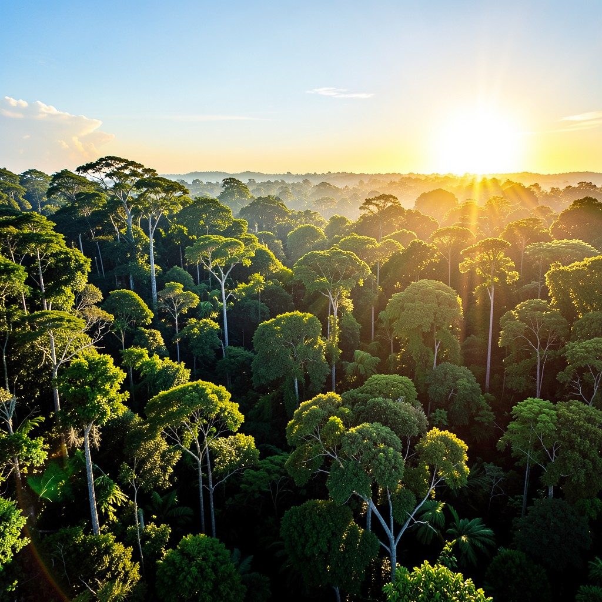
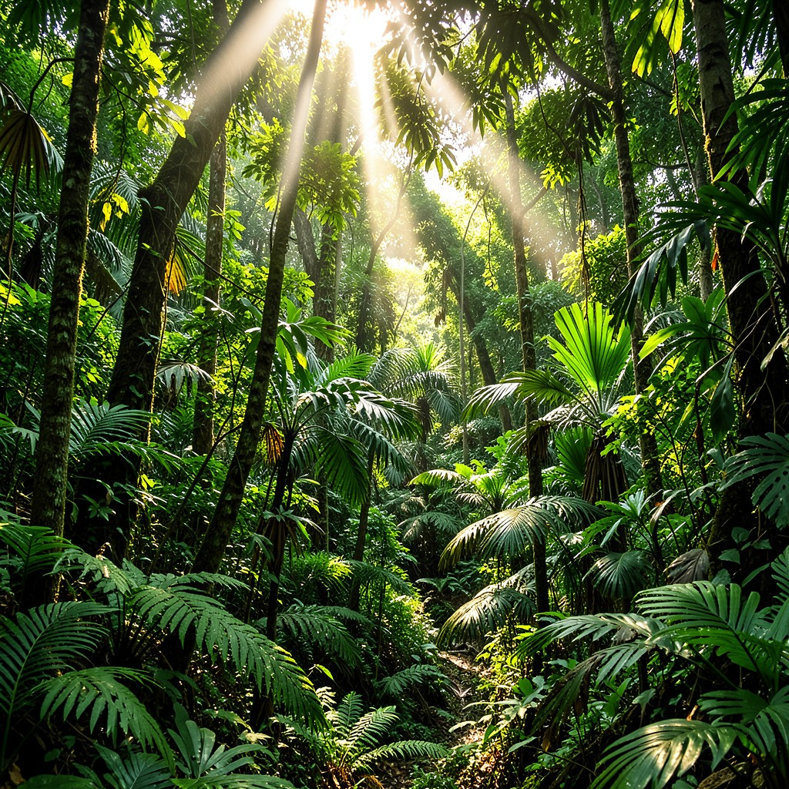
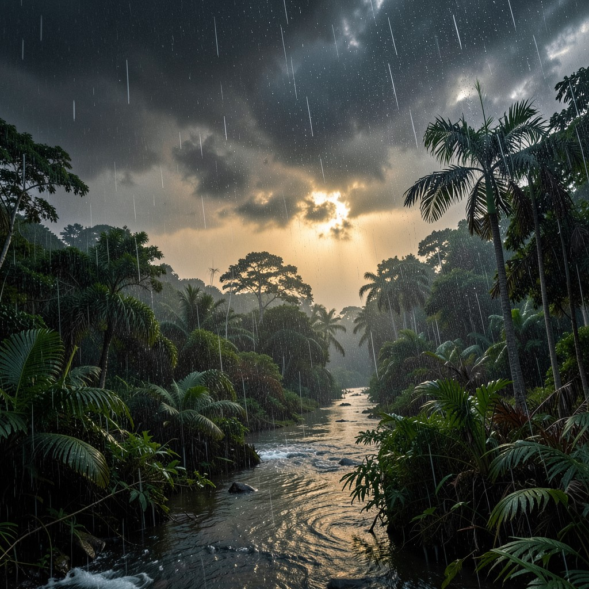

CLIMAS DO BRASIL
"O Brasil é um país tropical por excelência, mas de uma diversidade térmica surpreendente."
Zonas Climáticas
A extensão territorial do Brasil no sentido Norte-Sul é o principal fator para a nossa vasta diversidade climática. Com 92% do território na Zona Intertropical, o calor e a umidade são nossos traços marcantes.
Massa de Ar:
O clima brasileiro é fortemente influenciado pelas Massas de Ar Equatorial, Tropical e Polar, que definem o ritmo das chuvas e temperaturas.

Principais Domínios Climáticos
Equatorial
Predominante na Região Norte. Alta umidade (2.500mm+) e baixas amplitudes térmicas. O "pulmão" das massas úmidas.

Semiárido
O sertão nordestino. Temperaturas médias altas (28°C) e chuvas escassas e irregulares. O reino da Caatinga.

Subtropical
Abaixo do Trópico de Capricórnio. Estações definidas, geadas frequentes e chuvas bem distribuídas o ano todo.

Dinâmica de Chuvas
O Brasil é dominado por chuvas convectivas (verão) e frontais. No Nordeste, as chuvas orográficas são fundamentais para explicar as ilhas de umidade e o sertão seco.
Resumo Flash!
- Equatorial = Calor + Super Umidade
- Tropical = Verão Chuvoso + Inverno Seco
- Subtropical = Abaixo do Trópico (Frio)
- Massas de Ar = Motores do Clima
Exercícios de Fixação
1. (UESPI) O Brasil possui uma grande variedade de tipos climáticos. Assinale o tipo que domina na Região Sul:
Saiba Mais: Aprofundamento Oficial
Devido à sua vasta extensão territorial e localização predominante em zonas de baixas latitudes, o Brasil possui grande diversidade climática. O Clima Equatorial, quente e úmido na Amazônia; o Tropical com suas duas estações bem definidas no Centro-Oeste; o Semiárido do Sertão Nordestino com chuvas escassas e irregulares, e o Subtropical no Sul, que apresenta a maior amplitude térmica anual. Além disso, a Dinâmica das Massas de Ar, sobretudo no Inverno com a entrada da MPA (Massa Polar Atlântica), delineia mudanças drásticas nas temperaturas regionais.
Resumo Flash!
- Clima = Estado médio da atmosfera
- Fatores: Latitude, Altitude, Maritimidade
- Brasil: Predomínio do Clima Tropical
- Massas de Ar: mEc, mEa, mTc, mTa, mPa
O clima e a vida das pessoas
O clima influencia de diversas maneiras a vida das pessoas, por exemplo, o tipo de moradia, vestuário, as atividades econômicas e os processos migratórios. O Brasil, com sua grande extensão territorial, engloba uma série de fatores climáticos diferentes que devem ser considerados na arquitetura e na engenharia civil. O formato das moradias, sua posição em relação ao movimento do Sol e a direção dos ventos, o tipo de telhado considerando o regime de chuvas, a permeabilidade do solo, tudo isso, entre outros aspectos, deve ser reconhecido na execução de projetos arquitetônico.
É importante destacar que as atividades humanas podem sofrer adaptações paras as diferentes condições climáticas. Na prática da agricultura, por exemplo, um sistema de irrigação torna possível produzir diversas culturas em áreas de clima árido e semiárido.
Entretanto, existem regiões em que os habitantes são mais afetados pelas condições climáticas durante um maior espaço de tempo. Regiões nessa situação e seus habitantes necessitam de ações públicas no sentido de minimizar impactos negativos. No Brasil, a seca prolongada na região de clima semiárido do Sertão nordestino é um fenômeno natural que tem registro desde a colonização, mas ainda é motivo para agravar a fome e para provocar o êxodo rural de grupos que ainda ali vivem; várias pessoas migram para as cidades em busca de melhores condições de vida, especialmente o que dependem da agricultura de subsistência e da criação de animais, proprietários ou não de terras. No entanto, é importante afirmar que a seca não é responsável pela miséria no Sertão nordestino, embora possa agravá-la. A miséria nessa região decorre de muitos problemas associados, como concentração de terras, distribuição desigual de renda, pouco acesso à infraestrutura de serviços entre outros.
Fonte: JOIA, Antonio L.; GOETTEMS, Arno G. Geografia: leituras e interpretações. São Paulo: Leya, 1993. p. 176-177.